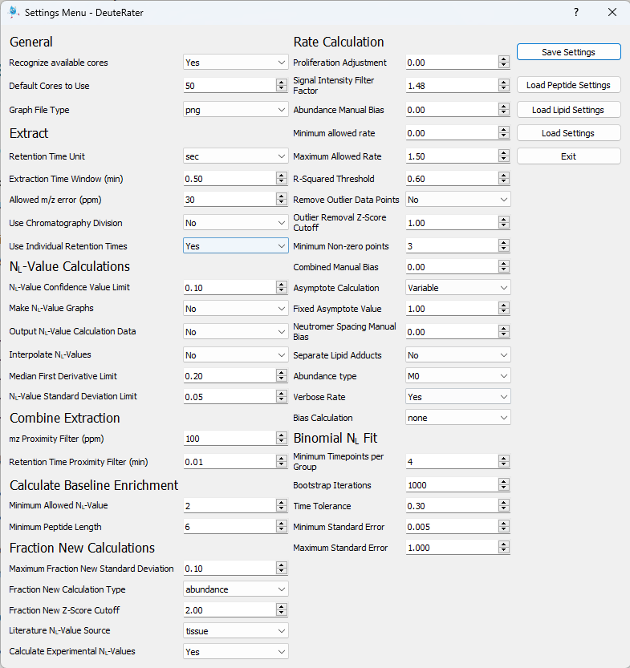
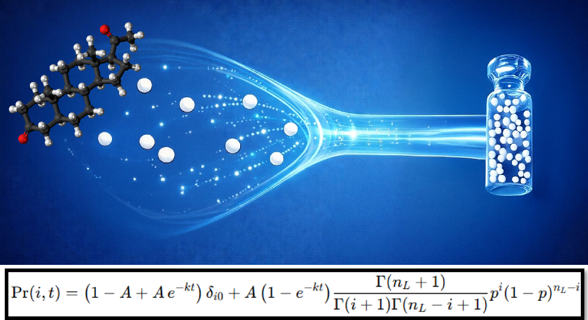
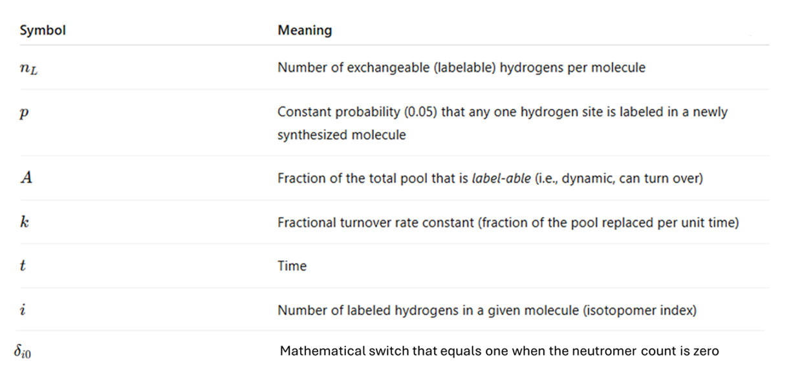

The Full Kinetic Analysis in DeuteRater performs empirical fitting of lipid isotopologue data to quantify
the incorporable deuterium count (nL), fraction of endogenous synthesis (Asyn),
and turnover rate constant (k) for each lipid species.
This stage converts isotopic envelope data into quantitative kinetic metrics central to lipidome-wide metabolism modeling.
If you have already completed the Extraction step (recommended when combining positive and negative polarities),
simply open DeuteRater, ensure your settings file is loaded, and enable all processing steps except Extraction.
Guidefile Input (if Extraction was not run separately)
If you skipped the standalone Extraction step, DeuteRater will automatically use your
guidefile—the MS-DIAL–derived file prepared in “Prepare Data for IH/DR”.
When launched, keep Extraction checked, load your guidefile, and proceed with a full run.
Open DeuteRater → select Lipidomics mode.
Load your settings (including the required and recommended parameters below).
Enable Extraction and select your guidefile when prompted.
Provide your Time & Enrichment table when requested, then run the analysis.
The guidefile supplies per-lipid targets and retention-time seeds, allowing DeuteRater to extract isotopologue envelopes
and estimate nL, Asyn, and k directly.
What DeuteRater performs during analysis
Loads isotopologue intensities (positive and negative modes merged via standardized lipid IDs).
Calculates nL empirically for each lipid or adduct.
Fits exponential turnover models to derive k and Asyn.
Applies R²-based quality filters and outlier controls for reliable kinetic estimation.
Generates rate constants, fraction-new values, and quality-control plots for all identified lipids.
Keep Calculate Experimental N-Values ON.
Lipid nL values are pathway-dependent and vary across tissues and conditions,
making empirical estimation essential for accurate kinetic interpretation (Nielsen et al., 2026).
Starting from the Extraction Step
Open DeuteRater → select Lipidomics.
Load your prior settings profile (used during Extraction).
Uncheck Extraction and enable all subsequent steps to continue the workflow.
Required Settings
Asymptote Calculation: Variable
Calculate Experimental N-Values: On
* nL represents the number of exchangeable hydrogens incorporated with deuterium.
This value cannot be derived from structure alone and must be determined empirically under your experimental conditions.
Recommended Settings

Time & Enrichment Metadata
DeuteRater requires a table describing sample collection times and body-water enrichment
for each individual. Enrichment can be determined using Cavity Ring-Down Spectroscopy (CRDS),
Isotope-Ratio Mass Spectrometry (IRMS), among other techniques.
When the Time & Enrichment table appears, include the following columns:
Filename — auto-filled by DeuteRater
Time — sampling time point (consistent units)
Enrichment — body-water deuterium fraction or percentage
For multi-day labeling studies, longer labeling durations (e.g., 16–32 days) yield more robust nL estimates.
In Nielsen et al., 2026, nL was derived from day 16 and day 32 subjects.
Outputs
nL quality-control plots for each lipid/adduct.
Rate-curve visualizations (e.g., R² > 0.6) and aggregate statistics of valid fits.
rates_by_sequence.tsv — turnover constants (k) and model metadata.
fraction_new.tsv — fraction-new values across time points (Asyn trajectories).
Finding nL by fitting the Labeling Probability Equation

The Labeling Probability Equation predicts the isotope spectra of a hydrogen-only molecule: If all of the hydrogen atoms of a labeled lipid molecule are conceptually gathered together this equation can describe its isotope distribution. This is useful because a hydrogen-only spectra can easily be deconvoluted from a molecule's empirical distribution. In this form the equation becomes simple enough to easily fit to our empirical data in DeuteRater. This is how we empirically solve for nL. Below is a description of the variables involved.

Variables of the Labeling Probabilty Equation
Conceptual description of the Labeling Probability Equation:The total probability of observing i incorporated labels at time t,
Pr(i,t), is modeled as a weighted sum of contributions from pre-existing (“old”)
unlabeled molecules and newly synthesized (“new”) labeled molecules. The time-dependent
weighting functions Fold(t) and Fnew(t) describe first-order
turnover, with the fraction of old molecules decaying exponentially and the fraction of new
molecules increasing correspondingly after label introduction. This framework links molecular
turnover kinetics to the evolving hydrogen-only isotope distributions used to fit
nL. The first term in the description of Prnew is a gamma-function
variant of the binomial coefficient, allowing non-integer nL values to be fit.
If you completed the Extraction step earlier, load the same settings and leave Extraction unchecked to continue.
Otherwise, enable all steps, select your guidefile, and verify that your settings match the recommendations above.
If DeuteRater_lipids_branch\__main__.cmd is present, the “Open DeuteRater” button will initialize it.